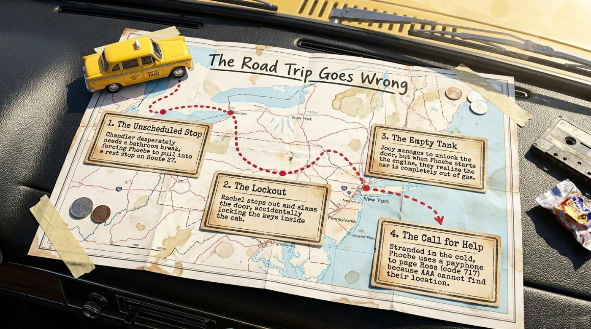
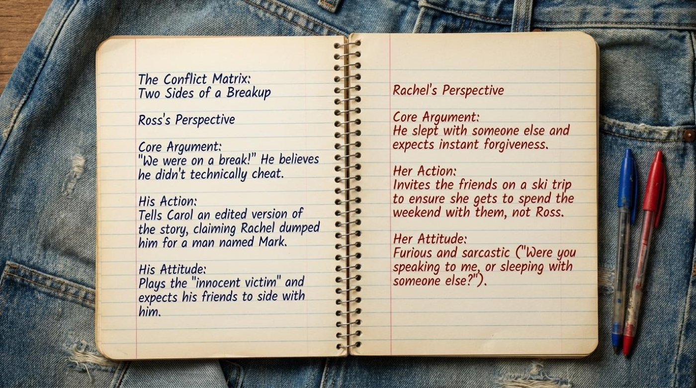
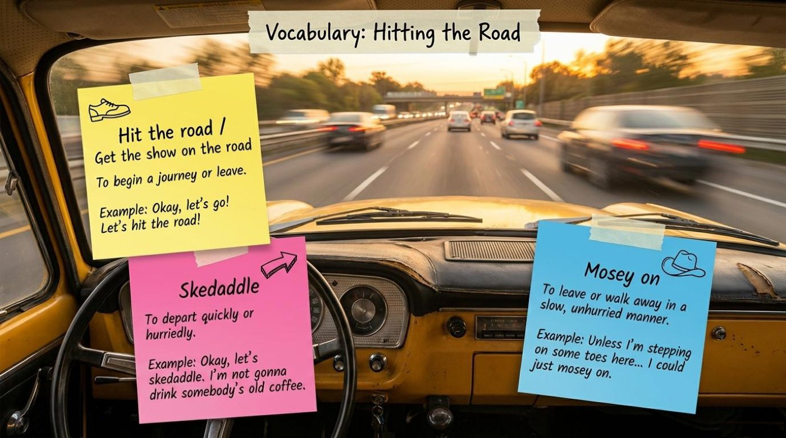
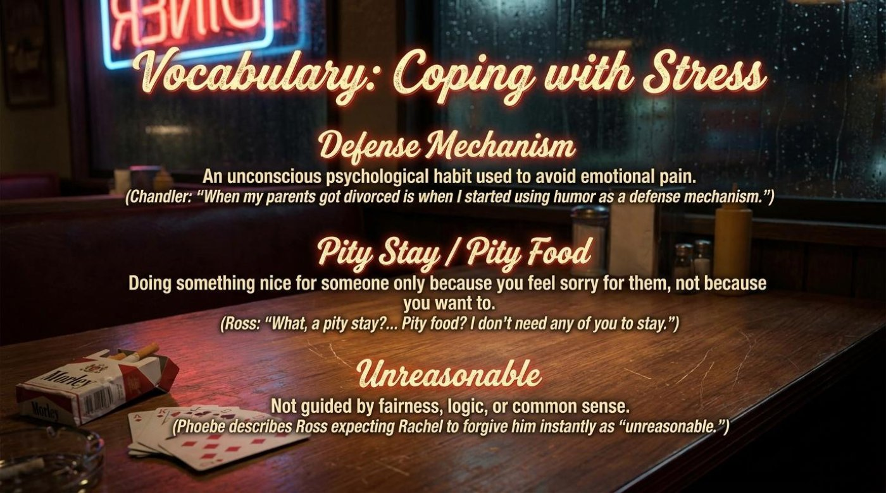
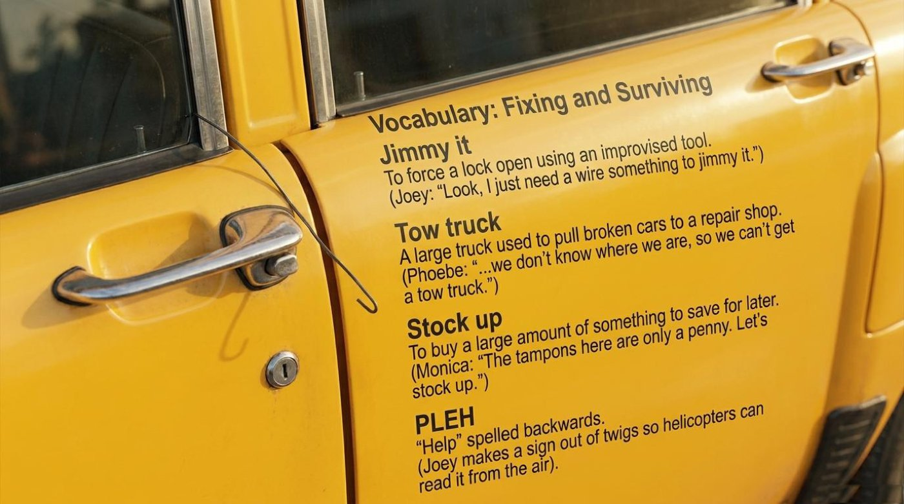
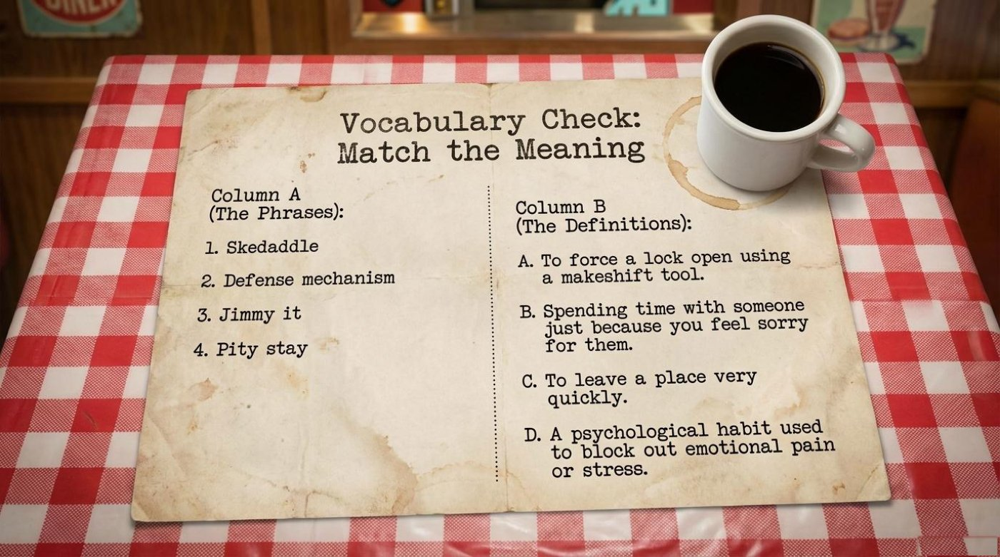
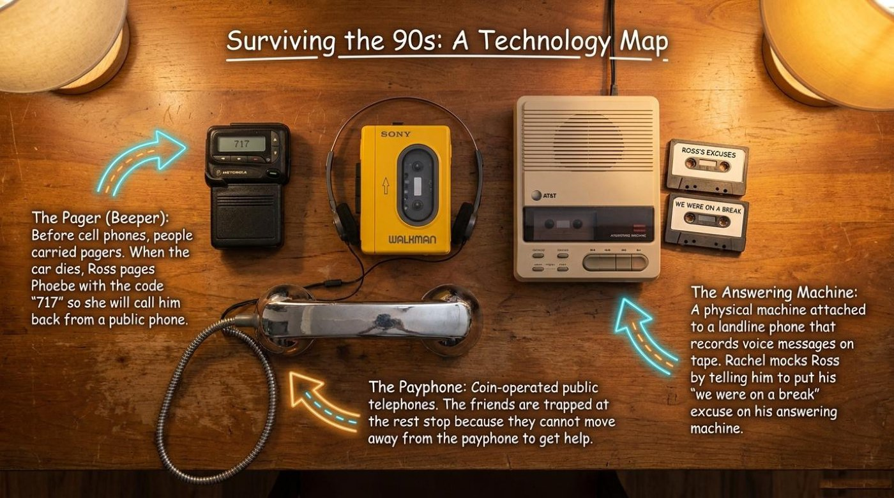
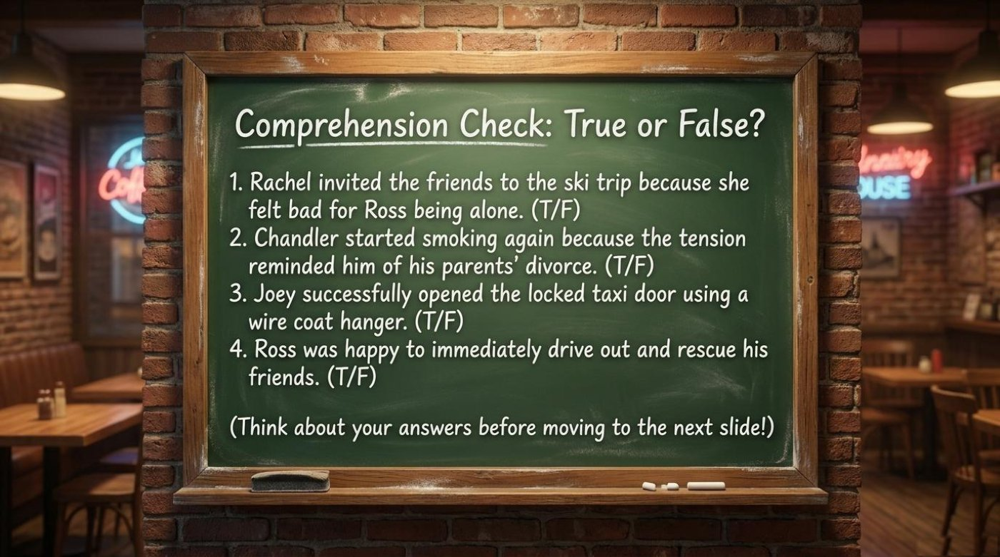
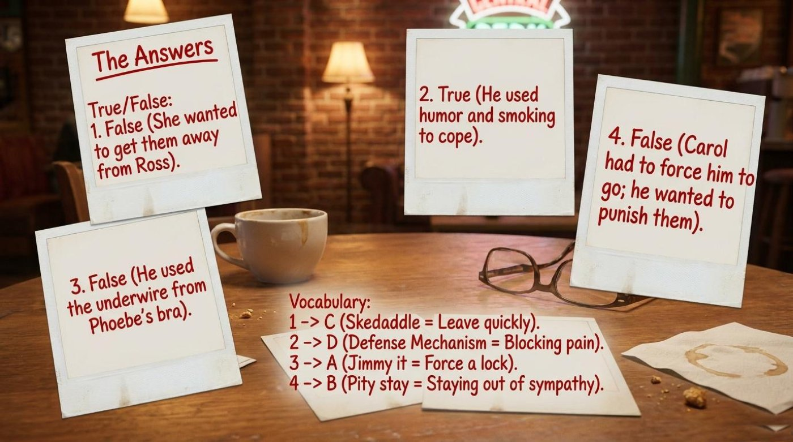
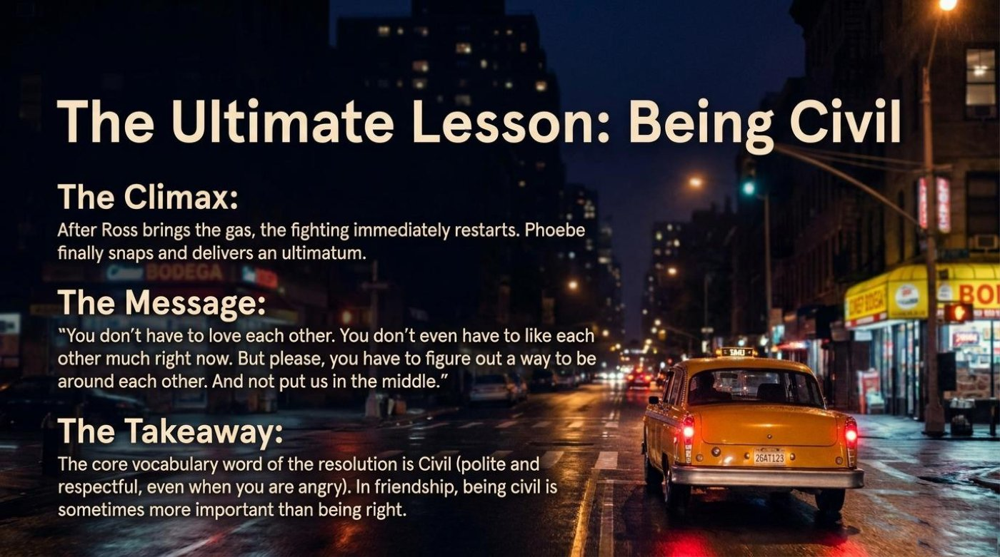

“We Were on a Break!”: How a Classic Friends Ski-Trip Episode Teaches Real English, Breakup Vocabulary, and the Art of Staying Civil
Few sentences in television history have started more arguments than “We were on a break!” Three small words from the sitcom Friends turned one fictional breakup into a debate that still splits group chats and dinner tables decades later. The episode behind the drama is the seventeenth installment of the show’s third season, known to fans as “The One with the Ski Trip,” and this lesson retells it under a playful new title: The One Without the Ski Trip — A Story of Breakups, Breakdowns, and Being Civil, packaged as “An Episodic Language & Culture Lesson.”
The material works like a guided tour through a single story: first the situation, then a road trip full of small disasters, then three walls of themed vocabulary, a crash course in 1990s technology, a comprehension drill, and one final moral word. It is important to understand that vocabulary learned inside a story sticks far better than word lists learned in isolation, and this lesson is a masterclass in that method. Pay attention to how every breakdown on the road becomes a phrase you can reuse in your own conversations, from let’s hit the road to let’s stay civil.

🚕 A Group Divided: The Situation, the Conflict, and the Result
The lesson opens with a clean three-part frame — the situation, the conflict, and the result. The situation is painfully simple: “It has been one week since Ross and Rachel’s bitter breakup. They refuse to be in the same room.” Two ex-partners, one friend group, and zero peaceful options for spending a Saturday together.
The conflict drops the remaining four friends — Phoebe, Chandler, Joey, and Monica — into an impossible position: “The remaining four friends are caught in the middle. Ross wants them to stay home for a LaserDisc and darts marathon. Rachel invites them to a weekend ski trip at her sister’s cabin.” The result is decided by simple timing: “Rachel asks first. The group goes skiing, leaving Ross alone in New York.” Notice that this is a complete storytelling skeleton — situation, conflict, result — that transfers directly into English: an anecdote about a family argument, a problem at work, or a trip that went sideways can all be narrated in exactly those three beats. The key point is that clear structure makes even a messy emotional story easy to tell.

Then the road trip goes wrong in four escalating steps, and each step is a gift of practical vocabulary. First comes “The Unscheduled Stop”: “Chandler desperately needs a bathroom break, forcing Phoebe to pull into a rest stop on Route 27.” Next is “The Lockout”: “Rachel steps out and slams the door, accidentally locking the keys inside the cab.” Disaster number three is “The Empty Tank”: “Joey manages to unlock the door, but when Phoebe starts the engine, they realize the car is completely out of gas.” The final blow is “The Call for Help”: “Stranded in the cold, Phoebe uses a payphone to page Ross (code 717) because AAA cannot find their location.”

The dialogue around these disasters is where the episode’s spoken English shines. Chandler announces the escape from the rest stop: “Okay, let’s skedaddle. I’m not gonna drink somebody’s old coffee.” Joey, staring at the locked cab, pleads for a tool: “Look, I just need a wire something to jimmy it.” Monica finds a silver lining on the shop shelves: “The tampons here are only a penny. Let’s stock up.” And Phoebe delivers the hopeless logistics: “…we don’t know where we are, so we can’t get a tow truck.” Each line is short, informal, and packed with a phrase that native speakers really use.
At the emotional center sits a two-column spread titled The Conflict Matrix: Two Sides of a Breakup. Ross’s case rests on a technicality: “‘We were on a break!’ He believes he didn’t technically cheat.” His action is pure spin: “Tells Carol an edited version of the story, claiming Rachel dumped him for a man named Mark.” His attitude is self-pity: “Plays the ‘innocent victim’ and expects his friends to side with him.”
Rachel’s case cuts straight to the point: “He slept with someone else and expects instant forgiveness.” Her action is strategic: “Invites the friends on a ski trip to ensure she gets to spend the weekend with them, not Ross.” Her attitude is fury with a blade of sarcasm: “Were you speaking to me, or sleeping with someone else?” The matrix refuses to crown a winner, and that refusal is itself a lesson in communication: strong English lets you present two opposing views fairly, with parallel structure — core argument, action, attitude — on each side. A practical exercise is to retell an argument from your own life twice, once per side, using that same three-part frame. Remember that arguing well in a new language is less about speed and more about having a structure to fall back on.

📚 The Vocabulary of Leaving, Coping, and Surviving
The lesson organizes its vocabulary into three themed clusters that mirror the story’s arc: words for hitting the road, words for coping with stress, and words for fixing and surviving. This clustering deserves to be copied in your own study, because the brain stores words better when they arrive inside a scene with emotions attached. Remember that every item below pairs the lesson’s own definition with the characters’ original lines, so each word is anchored to a moment you can actually picture.
🚗 Cluster 1 — Hitting the Road
The first cluster collects three ways to say “time to go,” ranging from energetic to cowboy-calm. Pay attention to the different speeds hidden in the words: one idiom starts the engine, one word flees the building in a panic of style, and one phrase moseys unhurriedly toward the door. Studying them together teaches more than studying any one of them alone.

Hit the road / Get the show on the road — idiom
- Literal meaning: to strike or hit an actual road with your feet or wheels.
- Figurative / contextual meaning: to begin a journey or leave; the paired phrase adds the flavor of a show finally starting.
- From the material: “Okay, let’s go! Let’s hit the road!” — the lesson’s example line captures the energy of a departure finally happening after delays.
- How the lesson explains it: “To begin a journey or leave.” — a compact definition that makes the idiom reusable for any trip, meeting, or goodbye.
Skedaddle — verb, informal
- Literal meaning: no physical object involved; the word simply means to hurry away.
- Figurative / contextual meaning: to depart quickly or hurriedly, with a comic, old-fashioned bounce.
- From the material: “Okay, let’s skedaddle. I’m not gonna drink somebody’s old coffee.” — Chandler would rather flee instantly than sip a stranger’s leftover coffee, and the word itself sounds like the scamper it describes.
- How the lesson explains it: “To depart quickly or hurriedly.” — the lesson pairs the definition with the coffee joke, showing that skedaddle adds humor to an ordinary exit.
Mosey on — phrasal verb, informal
- Literal meaning: to walk at a slow, relaxed pace, the way cowboys once did.
- Figurative / contextual meaning: to leave or walk away in a slow, unhurried manner — the polite, self-aware way to remove yourself from a scene.
- From the material: “Unless I’m stepping on some toes here… I could just mosey on.” — the speaker senses tension and offers a graceful exit instead of a dramatic one.
- How the lesson explains it: “To leave or walk away in a slow, unhurried manner.” — the lesson contrasts this calm exit with the urgent skedaddle, teaching rhythm and register by opposition.
🧠 Cluster 2 — Coping with Stress
The second cluster moves from the road to the mind. It explains why Chandler jokes through pain, why Ross rejects kindness, and why Phoebe calls Ross’s expectations exactly what they are. Interestingly, this is the cluster where the lesson drifts from casual English into gentle psychology, and the vocabulary works in both worlds — a therapist would recognize every term, and so would a bartender.

Defense mechanism — noun, psychology
- Literal meaning: in engineering, a mechanism is a device that protects a machine; the mind borrows the idea.
- Figurative / contextual meaning: any automatic behavior that shields you from emotional pain — jokes, smoking, denial.
- From the material: “When my parents got divorced is when I started using humor as a defense mechanism.” — Chandler explains his comedy as armor built in childhood, and this week’s tension adds cigarettes to the armor.
- How the lesson explains it: “An unconscious psychological habit used to avoid emotional pain.” — the lesson attaches the term to a character’s self-analysis, which is exactly how the phrase appears in real conversations.
Pity stay / Pity food — noun phrase, informal
- Literal meaning: pity is sorrow for someone’s misfortune; a stay is a visit, and food is a meal offered alongside it.
- Figurative / contextual meaning: doing something nice for someone only because you feel sorry for them, not because you want to.
- From the material: “What, a pity stay?... Pity food? I don’t need any of you to stay.” — Ross is offended by the thought that his friends’ company might be charity, so he rejects the kindness to protect his pride.
- How the lesson explains it: “Doing something nice for someone only because you feel sorry for them, not because you want to.” — the lesson demonstrates how English builds new compounds by attaching pity to almost any noun.
Unreasonable — adjective
- Literal meaning: not open to reason; refusing logical argument.
- Figurative / contextual meaning: not guided by fairness, logic, or common sense.
- From the material: Phoebe describes Ross expecting Rachel to forgive him instantly as “unreasonable.” — the word names the gap between what Ross demands and what Rachel owes.
- How the lesson explains it: “Not guided by fairness, logic, or common sense.” — a precise, reusable adjective for arguments, bosses, prices, and ex-partners.
🔧 Cluster 3 — Fixing and Surviving
The third cluster belongs to the parking lot: improvised tools, rescues that cannot find you, bargain shopping, and one backwards sign. These words turn a stranded afternoon into a survival toolkit, and they generalize far beyond taxis — the same vocabulary covers a flat bicycle tire, a jammed locker, and a suspiciously cheap supermarket shelf.

Jimmy it — verb phrase, informal
- Literal meaning: from the noun jimmy, a thin flat tool used for forcing locks and windows.
- Figurative / contextual meaning: to force a lock open using an improvised tool.
- From the material: “Look, I just need a wire something to jimmy it.” — Joey invents the grammar of desperation (“a wire something”) while asking for a lock-opening tool.
- How the lesson explains it: “To force a lock open using an improvised tool.” — the example shows the verb in its natural habitat: locked cars, lost keys, and whatever wire is at hand.
Tow truck — noun
- Literal meaning: a truck fitted with a hoist or sling for pulling other vehicles.
- Figurative / contextual meaning: rescue on wheels; the thing you call when driving is officially over.
- From the material: “…we don’t know where we are, so we can’t get a tow truck.” — Phoebe sums up the trap: help exists, but the group cannot describe their location to it.
- How the lesson explains it: “A large truck used to pull broken cars to a repair shop.” — a concrete, high-frequency compound noun for any travel emergency.
Stock up — phrasal verb
- Literal meaning: to fill your stock, or supply, of something.
- Figurative / contextual meaning: to buy a large amount of something to save for later.
- From the material: “The tampons here are only a penny. Let’s stock up.” — Monica turns a roadside shop into a bargain warehouse, and the phrase turns shopping into strategy.
- How the lesson explains it: “To buy a large amount of something to save for later.” — the example proves the phrase works for anything cheap and useful, from first-aid kits to canned coffee.
PLEH — noun, joke spelling
- Literal meaning: the word “help” spelled backwards.
- Figurative / contextual meaning: desperation processed through Joey’s logic — a sign made of twigs so aircraft can read it from the air.
- From the material: “Joey makes a sign out of twigs so helicopters can read it from the air.” — the lesson frames PLEH as a joke about intelligence failing upward.
- How the lesson explains it: “‘Help’ spelled backwards.” — the entry teaches that English humor often lives in spelling and visual gags, not just in wordplay.
🕊️ The Word That Ends the Fight
One more word completes the set, and it belongs to the story’s resolution rather than its disasters. Civil — adjective, from the Latin word for “citizen” — literally describes the polite behavior expected between members of a community. In this lesson it carries its figurative weight: polite and respectful, even when you are angry. The lesson’s takeaway states it plainly: “The core vocabulary word of the resolution is Civil (polite and respectful, even when you are angry). In friendship, being civil is sometimes more important than being right.” Keep the word within reach for the next meeting, the next family dinner, and the next group chat on fire — it is the rare vocabulary item that improves both your English and your weekend.
🎴 Flip-Card Deck: Six Terms to Own
The deck below gathers the six most valuable terms from the material into a self-testing game. Tap a card — or focus it with the Tab key and press Enter or Space — to flip it over and reveal the literal meaning, the way the word behaves in this story, the original quote, and a note on why it matters. The gold button flips the whole deck at once when it is time for a fast review.
🧩 The Matching Drill from the Lesson
The lesson closes its vocabulary track with a matching exercise on a diner placemat, and it works beautifully as a final self-test. Column A lists four phrases — skedaddle, defense mechanism, jimmy it, and pity stay — and Column B holds four definitions: “A. To force a lock open using a makeshift tool,” “B. Spending time with someone just because you feel sorry for them,” “C. To leave a place very quickly,” and “D. A psychological habit used to block out emotional pain or stress.” Try the four pairs silently before reading any further. The lesson’s official answer key connects skedaddle with C (leave very quickly), defense mechanism with D (blocking pain), jimmy it with A (forcing a lock), and pity stay with B (staying out of sympathy) — four matches that confirm the clusters did their job.

🎞️ Deeper Meaning: The Symbols Behind the Story
Beyond the vocabulary, the material is a small museum of symbols, and four of them turn a sitcom subplot into a story about friendship itself. Each one is worth a slow look, because together they explain why a half-hour television episode from 1997 still teaches communication better than most textbooks.
🚙 The Broken-Down Cab — Friendship Under Stress
The road trip works as a stress test. The group begins as one unit, and the journey strips away every comfort: a bathroom emergency, a locked door, an empty tank, and a location nobody can name. Notice that each disaster forces a different friend to step up — Phoebe drives and negotiates, Joey tinkers with the lock, Monica bargains in the shop, and Chandler copes with humor and nicotine. The lesson titles the sequence “The Road Trip Goes Wrong” and presents it as one connected chain rather than random bad luck, which is exactly how group breakdowns work in real life. The metaphor is direct: the trip fails not because of one villain but because the group stops communicating, and every repair — like every repair in a friendship — is collective.
📼 “We Were on a Break” — A Sentence That Became a Symbol
One sentence carries the entire conflict, and the lesson treats it as an artifact. Its technology map shows two cassette tapes labeled “ROSS’S EXCUSES” and “WE WERE ON A BREAK,” and explains that “Rachel mocks Ross by telling him to put his ‘we were on a break’ excuse on his answering machine.” The symbol works because the phrase means two opposite things at once: to Ross it is a legal defense, while to Rachel it is an insult with a confession attached. Remember that language gains its real power exactly where two people attach different meanings to the same words. Learners can borrow the insight directly: the phrases you repeat during a conflict become your signature, so it is worth choosing them as carefully as Ross should have.
☎️ The Payphone and the Pager — Trapped in the Pre-Cellphone World
The lesson’s technology map doubles as a map of helplessness. On the payphone, it states: “Coin-operated public telephones. The friends are trapped at the rest stop because they cannot move away from the payphone to get help.” On the pager, it begins: “Before cell phones, people carried pagers,” and then explains how the code 717 summons a call-back from a public phone — the stranded group paging Ross, exactly as the road-trip narrative tells it. In a world without mobile phones, communication demands a fixed point, a pocketful of coins, patience, and a shared code number. The trap deepens the drama because nobody can walk away, so the friends must actually solve the problem together instead of scrolling past it. For modern viewers these objects are also cultural literacy: half of 1990s comedy and drama only makes sense once you know what a beeper, a Walkman, and an answering machine did.

🤝 Civil — The Word That Ends the War
The final symbol is not an object but a word, and the lesson names it as the resolution’s core vocabulary. After Ross arrives with the gas can and the fighting immediately restarts, Phoebe finally snaps and delivers an ultimatum, and the story lands on behavior rather than blame. The lesson’s own interpretation deserves a full quotation: “The core vocabulary word of the resolution is Civil (polite and respectful, even when you are angry). In friendship, being civil is sometimes more important than being right.” The choice of civil is deliberate, because it demands neither love nor agreement nor even liking — it demands only decency. That restraint is why the word fits a friendship story and a language lesson at the same time.
🧠 Comprehension Check: The Lesson’s Quiz Wall
The material includes its own chalkboard drill of four true-or-false statements, and the interactive quiz below rebuilds that drill and extends it with vocabulary-in-context and fill-in-the-blank items. Answering before checking is the fastest way to move new words into long-term memory, so take the score seriously. Each answer produces instant feedback with a short explanation, and the final panel summarizes the result and offers a full reset.

The lesson’s official answer key confirms the drill’s results: Rachel’s invitation was strategic rather than sympathetic; Chandler’s smoking and humor were coping responses; Joey’s lock-picking tool was the underwire from Phoebe’s bra rather than a coat hanger; and Ross resisted the rescue until Carol forced him into the car. The same key matches skedaddle with C, defense mechanism with D, jimmy it with A, and pity stay with B. Checking yourself against an official key after self-testing doubles the review value, because it separates what you truly remembered from what you merely recognized.

☕ Conclusion: The Ultimate Lesson Is Being Civil
The material closes on a night street in New York, a yellow cab driving away from the camera, and one sentence that deserves to outlive the episode: “You don’t have to love each other. You don’t even have to like each other much right now. But please, you have to figure out a way to be around each other. And not put us in the middle.” The line is Phoebe’s ultimatum, delivered after the gas can arrives and the bickering restarts, and it is the moral center of the entire lesson.

The main takeaway for language learners comes straight from the lesson’s final card: “In friendship, being civil is sometimes more important than being right.” Words are not only tools for describing the world; they are tools for keeping the people around you whole. A learner who can say let’s hit the road, let’s skedaddle, that’s unreasonable, and let’s stay civil owns more than a list of phrases — that learner owns the social glue of a language.
Rewatch the seventeenth episode of the third season with fresh ears and listen for the phrases this lesson unpacked. Retell your own worst trip using the four-beat structure of situation, conflict, disaster, and rescue, and test the retelling on a friend. Review the flip-cards until the quiz score turns perfect, and keep the word civil at the front of your vocabulary for the next argument you did not start. The full slide deck waits in the lesson files below, and it rewards a second visit.